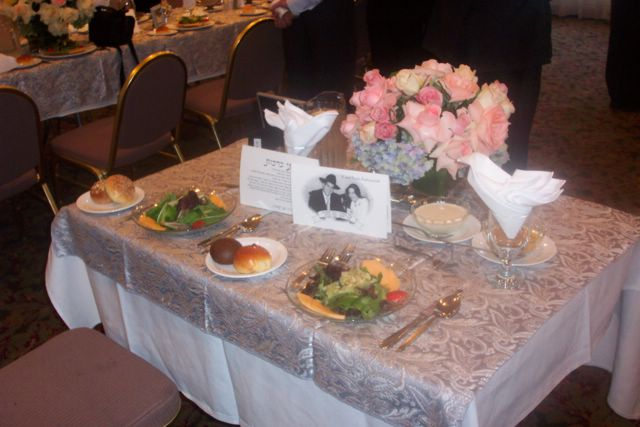
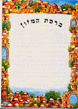

When the groom reaches the canopy, the cantor sings:
BLESS HE-groom HIMSELF COME. HE-God POWERFUL MORE-THAN1 (2h)#ALL2, HE-God WE BLESS MORE-THAN (2h)#ALL, HE-God WONDERFUL MORE-THAN (2h)#ALL, REALLY-WANT3 HIM BLESS TWO-OF-THEM SOON (<) HUSBAND, (>) WIFE.
As the bride circles the groom, the cantor signs:
BLESS SHE-bride HERSELF COME. HE-God UNDERSTAND ROSE BETWEEN T-H-O-R-N. WIFE NEW, MOST HAPPY COMPARE PEOPLE CHERISH. REALLY-WANT HIM BLESS TWO-OF-THEM SOON (<) HUSBAND, (>) WIFE.
The rabbi conducting the service holds a cup of wine and recites:
LORD OUR GOD, KING WORLD~GENERAL, WE PRAISE. WHY? YOU CREATE4 GRAPES. Guests and couple: AMEN.
LORD OUR GOD, KING WORLD~GENERAL, WE PRAISE. WHY? YOU MAKE US HOLY THROUGH YOUR COMMANDMENT. YOU COMMAND US ABOUT SOME MARRY FORBIDDEN. WOMAN ENGAGED, PROCEED #SEX FORBIDDEN. WOMAN, WE MARRY THROUGH CANOPY5 AND CELEBRATE MAKE HOLY. WE PRAISE YOU, WHY? HE MAKE HIS JEWISH PEOPLE HOLY THROUGH CANOPY AND CELEBRATE. Guests and couple: AMEN.
Bride and groom drink from the wine. The groom holds his ring ready to place on the bride's right index finger and says to her:
RING FOR-FOR? PROVE OUR RELATIONSHIP HOLY, ITSELF FOLLOW JEWISH POSS.+, MOSES6 PASS-DOWN.
After the ring is placed on the bride's finger, the ketubah (marriage contract) is read aloud and handed to the groom who presents it to the bride. (The interpreter should secure a translation of this document for interpretation.) Then a second cup of wine is poured and the following blessings are recited:
LORD OUR GOD, KING WORLD~GENERAL, WE PRAISE. WHY? YOU CREATE EVERYTHING FOR YOUR GLORY7. Guests and couple: AMEN.
LORD OUR GOD, KING WORLD~GENERAL, WE PRAISE. WHY? YOU CREATE PEOPLE. Guests and couple: AMEN.
LORD OUR GOD, KING WORLD~GENERAL, WE PRAISE. WHY? YOU CREATE PEOPLE. WE INSIDE-SELF8 we-SAME-AS-You. WE INSIDE-SELF STRIVE-FOR-GOAL9 we-SAME-AS-You. LORD, WE PRAISE WHY? YOU CREATE PEOPLE. Guests and couple: AMEN.
BRING THRILL, HAPPY, TO JERUSALEM. HOW? JEWISH PEOPLE, PLEASE COLLECT, THEY SMILE ASSEMBLE10 #BACK-TOGETHER11. LORD, WE PRAISE WHY? MOUNTAIN Z-I-O-N BECOME HAPPY THROUGH HER CHILDREN. Guests and couple: AMEN.
MAKE TWO-OF-THEM HAPPY IDEA~LIKE (<) ADAM12, (>) EVE13, LONG-AGO. LORD, WE PRAISE WHY? YOU MAKE TWO-OF-THEM HAPPY. Guests and couple: AMEN.
LORD OUR GOD, KING WORLD~GENERAL, WE PRAISE. WHY? YOU CREATE HAPPY, SMILE, HUSBAND, WIFE, LAUGH, SING, ENJOY, THRILL, LOVE, BROTHER~SISTER COOPERATE, PEACE, TOGETHER. LORD, OUR GOD, WE REALLY-WANT HEAR IN J-U-D-A-H CITY, IN JERUSALEM14 STREET, PEOPLE HAPPY, PEOPLE THRILLED, HEAR HUSBAND NEW, HEAR WIFE NEW, HEAR HUSBAND HAPPY MARRY, HEAR YOUNG PEOPLE SING DURING FEAST. LORD, WE PRAISE WHY? YOU MAKE HUSBAND HAPPY ABOUT WIFE. Guests and couple: AMEN.
LORD OUR GOD, KING WORLD~GENERAL, WE PRAISE. WHY? YOU CREATE GRAPES. Guests and couple: AMEN.

This service can take place daily for the week following the marriage, as well as after the wedding reception.
Before the meal starts, the guest wash their hands with a special blessing that is said individually, so need not be interpreted. At some point the groom or honored guest says the blessing over bread:
LORD OUR GOD, KING WORLD~GENERAL, WE PRAISE. WHY? YOU CAUSE BREAD SHOW-UP FROM EARTH.
When the meal has ended, the guests sing the following song.
SONG ADVANCED++-up. LONG-AGO WAR HAPPEN ISRAEL CAUSE JEWISH PEOPLE SPREADwg. LATER GOD HELP-us US GET-#BACK-TOGETHER ISRAEL. FEEL LIKE DREAM BECOME TRUE. WE LAUGH AGAIN, CELEBRATE COOPERATE. COUNTRY VARIOUS THEY-lf SAY (role play > rt) GOD DO WONDERFUL* FOR JEWISH PEOPLE, "WOW". (end role play) RIGHT* THEY-lf. GOD TRUE~BIZ15 DO WONDERFUL* FOR US. INSPIRED. AGAIN JEWISH PEOPLE SPREADwg. ISRAEL WITHOUT US LIKE DESERT. IF YOU-God HELP-us US GET-#BACK-TOGETHER, ISRAEL IDEA~LIKE PLANT YOU-God SEND RAIN, BLOSSOM16 #WILL. IF FARMER PLANT-SEED, BURY, MAYBE FEEL SAD, BUT FOOD GROW, COLLECT HEAPS, FARMER INSPIRED.
ME PROCEED PRAISE GOD FOR INDEX-LIST17. FROM-NOW-ON FOREVER EVERYTHING LIVE, ANNOUNCE HIS NAME HOLY MUST. HE BLESS US HOW? LONG-LIST18. WE WILLING ANNOUNCE THAT FROM NOW-ON FOREVER WE PRAISE GOD #WILL. God-SELF TOP. WHY? HIS MERCY-ON-us CONTINUE"over time". GOD DO WONDERFUL*. IF YOU WANT TELL-STORY HIS+, IMPORTANT INCLUDE EVERYTHING.
A guest is honored to lead the blessings after the meal.
Leader: NOW TIME PRAISE GOD FOR FOOD.
Guests: HOPE PEOPLE CONTINUE PRAISE GOD FROM-NOW-ON19 FOREVER.
Leader: HOPE PEOPLE CONTINUE PRAISE GOD FROM-NOW-ON FOREVER. (<) PAIN, (>) ANGER, PLEASE THROW-OUT20. HAPPEN MUTE21 CELEBRATE THROUGH SONG CAN. GUIDE US RIGHT WAY. PAY-ATTENTION COHEN22 GROUP, AARON23 HIS CHILDREN, BLESS. HERE PEOPLE ADVANCED24 ALLOW ME PRAISE OUR GOD HIMESELF TOGETHER US DURING THIS CELEBRATE, PLUS FEED US WITH HIS BOUNTY25.
Guests: WE PRAISE OUR GOD HIMESELF TOGETHER US DURING THIS CELEBRATE, PLUS FEED US WITH HIS BOUNTY. HIS GOOD CHARACTER26 ALLOW US LIVE.
Leader: WE PRAISE OUR GOD HIMESELF TOGETHER US DURING THIS CELEBRATE, PLUS FEED US WITH HIS BOUNTY. HIS GOOD CHARACTER ALLOW US LIVE. WE PRAISE HIM AND HIS NAME.
All continue: LORD OUR GOD, KING WORLD~GENERAL, WE PRAISE-God. WHY? YOU-God (1) GOOD, (2) KIND27, (3) HAVE-MERCY-ON-us. EVERYTHING YOU-God CHERISH, LIVE UPRIGHT28. SET-UP WORLD, HAVE FOOD READY FOR US. UP-TO-NOW FOOD, WE BARELY-GET-BY29, NEVER. TRUST CONTINUE"over time" #WILL. WHY? God-YOU YOURSELF PLAN, FEED"each" WORLD~THEREABOUTS. LORD OUR GOD, WE PRAISE-God. WHY? YOU-God FEED"each" WORLD~THEREABOUTS.
On Channukah add: FOR MIRACLE, FOR SALVATION, FOR STRONG ACTION, FOR VICTORY, FOR WHAT YOU-God HELP OUR FOREFATHERS30 WE REMEMBER TODAY.
On Channukah say: DURING TIME M-A-T-I-T-Y-A-H-U, HIMSELF ADVANCED PRIEST31, PLUS HIS SON+. THEY REBEL AGAINST BAD* GREEK GOVERNMENT OPPRESS US. WE FORGET TORAH32 AND YOUR COMMANDMENTS. BUT YOU-God HAVE-MERCY-us US DURING TROUBLE. YOU-God JUDGE GREECE, SUPPORT US, PUNISH THEM. (<) WEAK BEAT (>) STRONG, (<) FEW BEAT (>) MANY, (<) PURE33 BEAT (>) NOT PURE, (<) RIGHTEOUS BEAT (>) BAD*, (<) STUDENT+ YOUR TORAH BEAT (>) PEOPLE NOT FOLLOW YOUR REALLY-WANT. YOUR NAME BECOME SHINY, JEWISH PEOPLE HAVE BIG VICTORY. WE REMEBER THAT SALVATION TODAY. WAR FINISH, YOUR CHILDREN ENTER TOP HOLY PLACE IN TEMPLE, CLEAN, MAKE PURE AND LIGHT MENORAH IN YOUR HOLY PLACE. THEY ESTABLISH EIGHT DAY CHANNUKAH EXPRESS HAPPY AND PRAISE YOUR WONDERFUL NAME.
WE THANK-God++, LORD OUR GOD FOR LONG-LIST. (1) LONG-AGO YOU-God SET-UP ISRAEL FOR JEWISH PEOPLE. ITSELF-ctr COUNTRY BEAUTIFUL, BIG'cha'. (2) LATER WE SLAVE EGYPT, BUT YOU-God HELP-us SAVE US, (3) CIRCUMCISION, SHOW"all" God-TWO-OF-US COVENANT34. (4) God-TEACH-us TORAH. (5) God-INFORM-us LAW WE NEED FOLLOW. (6) JEWISH LIFE HELP"each" RIGHT*. (7) WORLD~GENERAL, YOU-God FEED"over time".
LORD OUR GOD, EVERYTHING WE INDEX-LIST UP-TO-NOW, THANK-God++. WORLD~GENERAL PRAISE YOUR NAME MUST. CONTINUE"over time" FOREVER. WHY? TORAH COMMAND, QUOTE, IF (2h)YOU"all" (2h)alt.EAT, SATISFIED, IMPORTANT SAY, God-GIFT-TO-us LAND, THUMBS-UP. WE THANK-God++ LORD OUR GOD. WHY? HE-God God-GIFT-TO-us LAND BEAUTIFUL PLUS FOOD HEAPS-OF.
LORD OUR GOD, HAVE-MERCY-ON-us (1) US, YOUR PEOPLE, (2) JERUSALEM, YOUR CITY, (3) Z-I-O-N, YOUR MOUNTAIN, (4) FUTURE KING, YOUR MESSIAH, (5) TEMPLE, BIG'cha' HOLY, ITSELF YOURS. OUR GOD, HEAVENLY-FATHER35, CARE-FOR-us IDEA~LIKE SHEEP GROUP HAVE SHEPHERD. FEED US. ALLOW OUR WORK SUCCEED. SUPPORT US. HELP-us EVERY PROBLEM SOLVE SOON. NEVER ALLOW US BECOME DEPENDENT-ON OTHER PEOPLE (<) PAY-FOR++36 US, (>) LOAN-TO-us++. WHY? GOD God-HELP-us'pc'++ (2h)FINE, BUT DEPENDENT-ON-lf SHAME* (1h)AWFUL*.
PLUS TEMPLE SET-UP. SOON JERUSALEM NAME~SHINY37 AGAIN. WE PRAISE-God GOD. WHY? YOU-God HAVE-MERCY-ON-ctr JERUSALEM RENOVATE ADVANCE'step-by-step'38. JERUSALEM BECOME LIKE USED-TO-BE. Guests and couple: AMEN.
LORD OUR GOD, KING WORLD~GENERAL, WE PRAISE-God. WHY? God-HIMSELF, OUR* GOD, HEAVENLY-FATHER, KING, AUTHORITY SUPREME, WORLD MAKER, SAVIOR. OUR BODY YOURS-God's. (<) WE, (>) OUR FOREFATHERS, CALL-God HOLY. YOU-God LEAD (<) US, (>) JEWISH PEOPLE GENERAL, IDEA~LIKE SHEPHERD. IDEA~LIKE KING, WILLING HELP"each". EVERYTHING WE NEED, (2h)alt.LAVISH-ON-us. GIFT-TO-us, KIND, DO FAVOR. ENTER TROUBLE, HE SAVE US, RELIEVED. HE BLESS, PROBLEM SOLVE, COMFORTABLE. LIFE TAKE-OFF. WORK JUST-RIGHT. FOOD HEAPS. GOD God-LOOK-DOWN, TOUCHED, God-HELP-below. LIFE EXTEND, PEACE HAVE*. EVERYTHING THUMBS-UP. HOPE GO-WRONG, BE-SPARSE, NEVER. God-HIMSELF HAVE-MERCY-ON-us, HOPE HE CONTINUE RULE US IDEA~LIKE KING FOREVER.
God-HIMSELF HAVE-MERCY-ON-us, (<) HEAVEN, (>) EARTH, PRAISE-God MUST.
God-HIMSELF HAVE-MERCY-ON-us, WE WILL TEACH OUR CHILDREN PASS-DOWN HOW PRAISE YOU-God, PLUS SHOW WORLD GENERAL YOUR NAME~SHINY. HIT* PEOPLE WORSHIP YOU-God FROM-NOW-ON FOREVER.
God-HIMSELF HAVE-MERCY-ON-us, God-HELP-us WORK, PEOPLE RESPECT-us.
God-HIMSELF HAVE-MERCY-ON-us, HELP-us OFF-OPPRESSION39. PROUD MOVE-TO ISRAEL SETTLE.
God-HIMSELF HAVE-MERCY-ON-us, BLESS HERE HOUSE LONG-LIST. WHY? WE ARRIVE TAKE-OPPORTUNITY (2h)alt.EAT.
God-HIMSELF HAVE-MERCY-ON-us, SEND PROPHET WHO? E-L-I-J-A-H. WE LOOK-BACK REMEMBER INDEX-SELF GOOD*. SEND FOR-FOR? ANNOUNCE TIME-PERIOD ARRIVE WORLD GENERAL MANY-LOOK-TO-God40 OBEY.
God-HIMSELF HAVE-MERCY-ON-us, BLESS EVERYONE (2h)alt.EAT HERE.
BLESS #ALL-OF-US41 PLUS EVERYTHING WE HAVE LIKE YOU-God BLESS OUR FOREFATHERS (1) ABRAHAM42, (2) ISAAC43, (3) JACOB44 LIST-OF-THREE"each"45. #ALL-OF-US COME-TOGETHER, BLESS GENERAL. COME-ON46 SAY AMEN.
PLEASE REMEMBER OUR FOREFATHERS HELP JUSTICE. FOR S-A-K-E (1) ABRAHAM, (2) ISAAC, (3) J-A-C-O-B, PLEASE ESTABLISH PEACE PERMANENT. LORD BLESS US. GOD HIMSELF SAVE US AGAIN+, CONTROL JUST #WILL. HOPE (<) GOD, (>) PEOPLE GENERAL, FEEL THUMBS-UP.
On the Rosh Chodesh say: God-HIMSELF HAVE-MERCY-ON-us, MAKE THIS MONTH PROVIDE GOOD~THINGS AND BLESS US.
Some add the next three paragraphs:
God-HIMSELF HAVE-MERCY-ON-us, BLESS GOVERNMENT ISRAEL ITS+, PLUS JERUSALEM, rt-SELF HOLY, YOURS-God's. HOPE SOON JEWISH PEOPLE FLOCK-TO-rt YOU-God CONTROL-rt COMPLETE*.
God-HIMSELF HAVE-MERCY-ON-us, ESTABLISH PEACE BETWEEN (<) JEW, (>) ARAB. UNDERSTAND, BOTH HAVE ABRAHAM FOR FOREFATHERS.
God-HIMSELF HAVE-MERCY-ON-us, (<) BLESS, (>) SAVE, JEWISH PEOPLE LIVE RUSSIA OR ARAB COUNTRY.
God-HIMSELF HAVE-MERCY-ON-us, HOPE WE WORTH WITNESS MESSIAH ARRIVE, WORLD BECOME PERFECT. BEFORE, ISRAEL ANOINT DAVID BECOME KING. GOD WILLING HELP KIND. PLUS HELP CHILDREN@lf, THEIR-lf CHILDREN@ctr, THEIR-ctr CHILDREN@rt. GOD ESTABLISH PEACE FAR-OFF HEAVEN. WE PRAY HERE BECOME here-SAME-AS-heaven FOR US PLUS JEWISH PEOPLE GENERAL. #ALL-OF-YOU SAY, AMEN.
IF (2h)YOU WANT LIVE HOLY, #DO-DO? RESPECT LORD. FROM-THEN-ON FOOD HAVE ALWAYS. SOMETIMES E-V-E-N LION YOUNG SEARCH FOOD, FIND CAN'T, BUT IF (2h)YOU FOLLOW HIS LAW, EVERYTHING GOOD HAVE PLENTY WILL. WHY? HE HAVE-MERCY-ON-us FOREVER. GOD WILLING (2h)alt.GIFT-TO-"each". IF (2h)YOU TRUST GOD, DEPEND-ON-God GOD, HE BLESS #WILL. ME SEE PERSON lf-SELF UPRIGHT SUDDEN-WRONG, BROKE. HIS-lf CHILDREN BEG-FROM-"each", NEVER. UNDERSTAND ME OLD ME. LORD WILLING HELP BECOME-STRONG. ESTABLISH PEACE FOR HIS-God's PEOPLE #WILL.
After Birkat haMazon, the following seven blessings are said:
LORD OUR GOD, KING WORLD~GENERAL, WE PRAISE. WHY? YOU CREATE EVERYTHING FOR YOUR GLORY. Guests and couple: AMEN.
LORD OUR GOD, KING WORLD~GENERAL, WE PRAISE. WHY? YOU CREATE PEOPLE. Guests and couple: AMEN.
LORD OUR GOD, KING WORLD~GENERAL, WE PRAISE. WHY? YOU CREATE PEOPLE. WE INSIDE-SELF we-SAME-AS-You. WE INSIDE-SELF STRIVE-FOR-GOAL we-SAME-AS-You. LORD, WE PRAISE WHY? YOU CREATE PEOPLE. Guests and couple: AMEN.
BRING THRILL, HAPPY, TO JERUSALEM. HOW? JEWISH PEOPLE, PLEASE COLLECT, THEY SMILE ASSEMBLE #BACK-TOGETHER. LORD, WE PRAISE WHY? MOUNTAIN Z-I-O-N BECOME HAPPY THROUGH HER CHILDREN. Guests and couple: AMEN.
MAKE TWO-OF-THEM HAPPY IDEA~LIKE (<) ADAM, (>) EVE, LONG-AGO. LORD, WE PRAISE WHY? YOU MAKE TWO-OF-THEM HAPPY. Guests and couple: AMEN.
LORD OUR GOD, KING WORLD~GENERAL, WE PRAISE. WHY? YOU CREATE HAPPY, SMILE, HUSBAND, WIFE, LAUGH, SING, ENJOY, THRILL, LOVE, BROTHER~SISTER COOPERATE, PEACE, TOGETHER. LORD, OUR GOD, WE REALLY-WANT HEAR IN J-U-D-A-H CITY, IN JERUSALEM STREET, PEOPLE HAPPY, PEOPLE THRILLED, HEAR HUSBAND NEW, HEAR WIFE NEW, HEAR HUSBAND HAPPY MARRY, HERA YOUNG PEOPLE SING DURING FEAST. LORD, WE PRAISE WHY? YOU MAKE HUSBAND HAPPY ABOUT WIFE. Guests and couple: AMEN.
LORD OUR GOD, KING WORLD~GENERAL, WE PRAISE. WHY? YOU CREATE GRAPES. Guests and couple: AMEN.
Footnotes